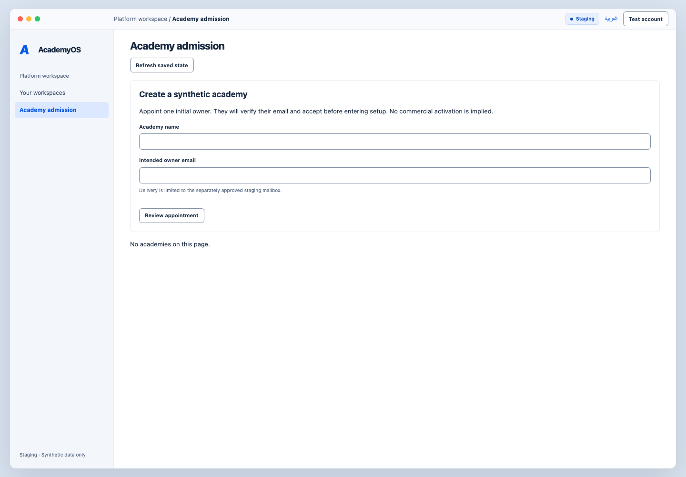
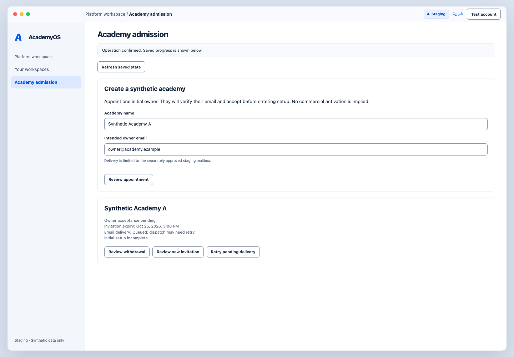
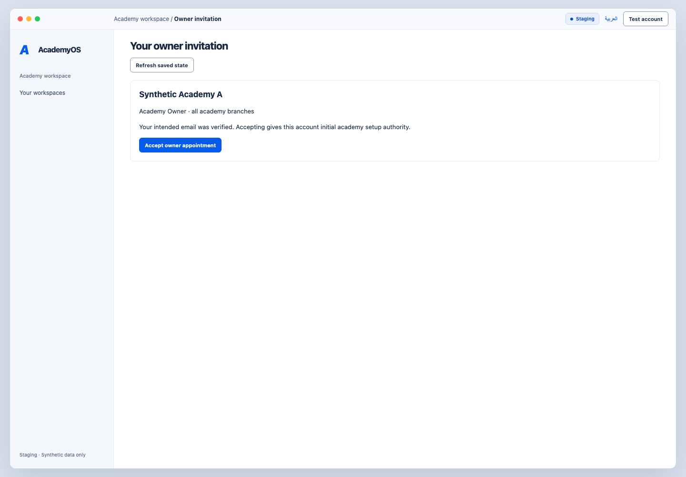
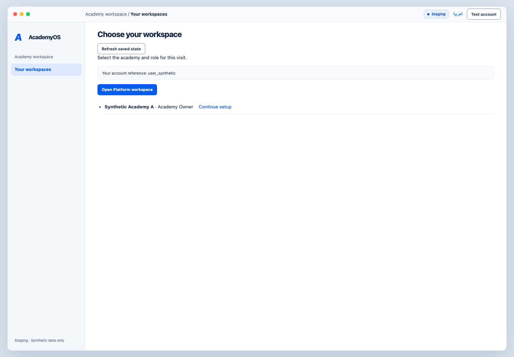
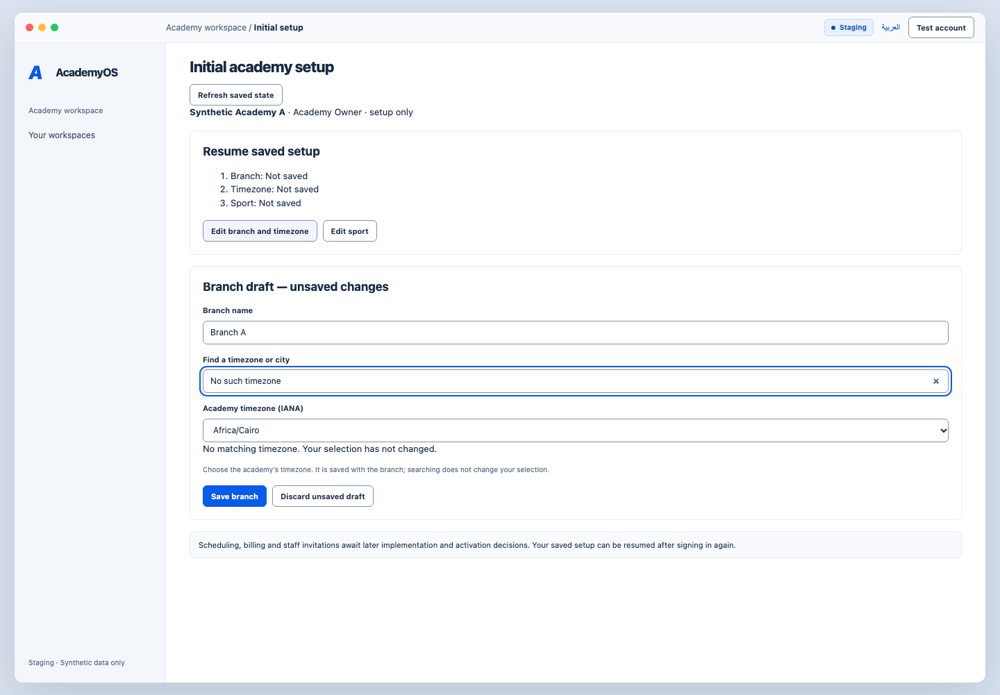
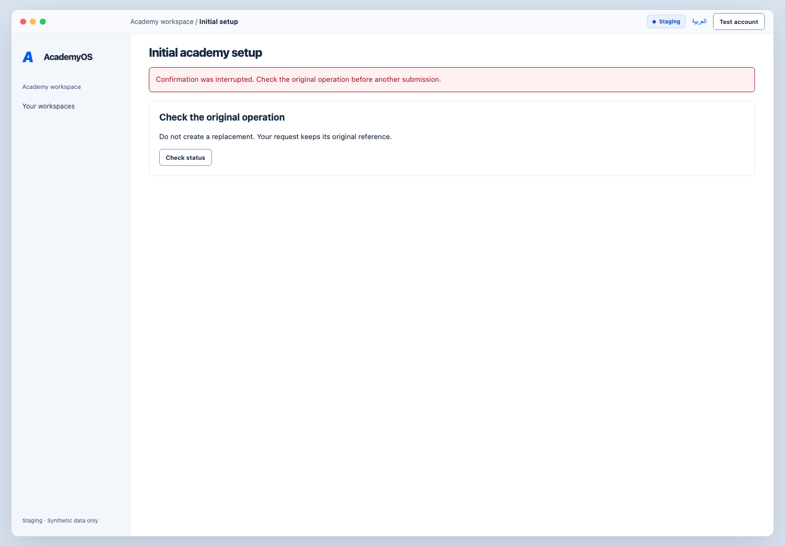
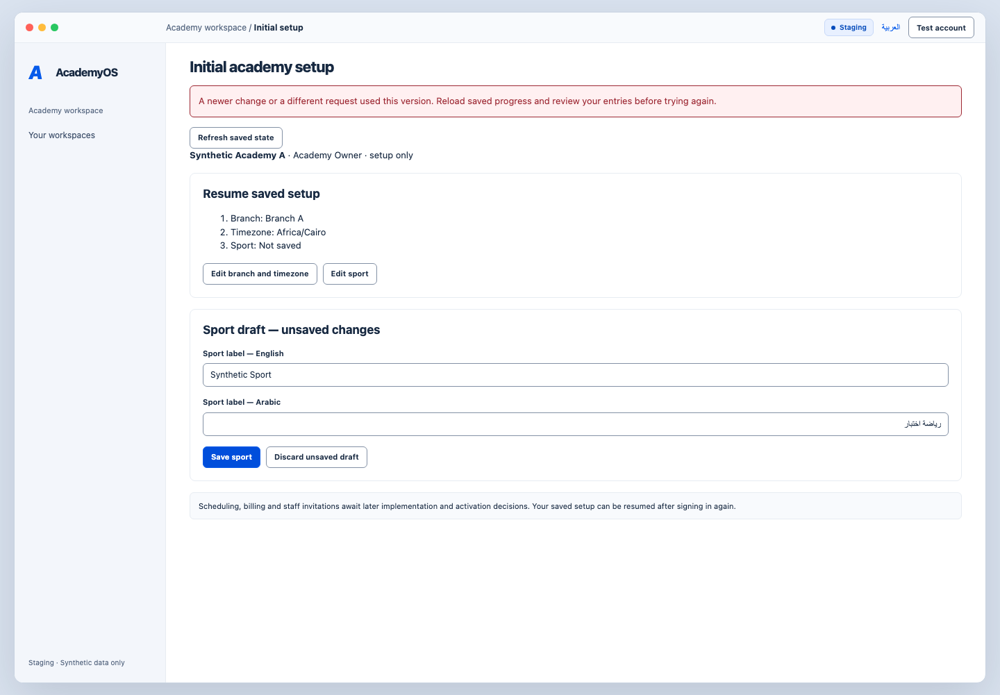
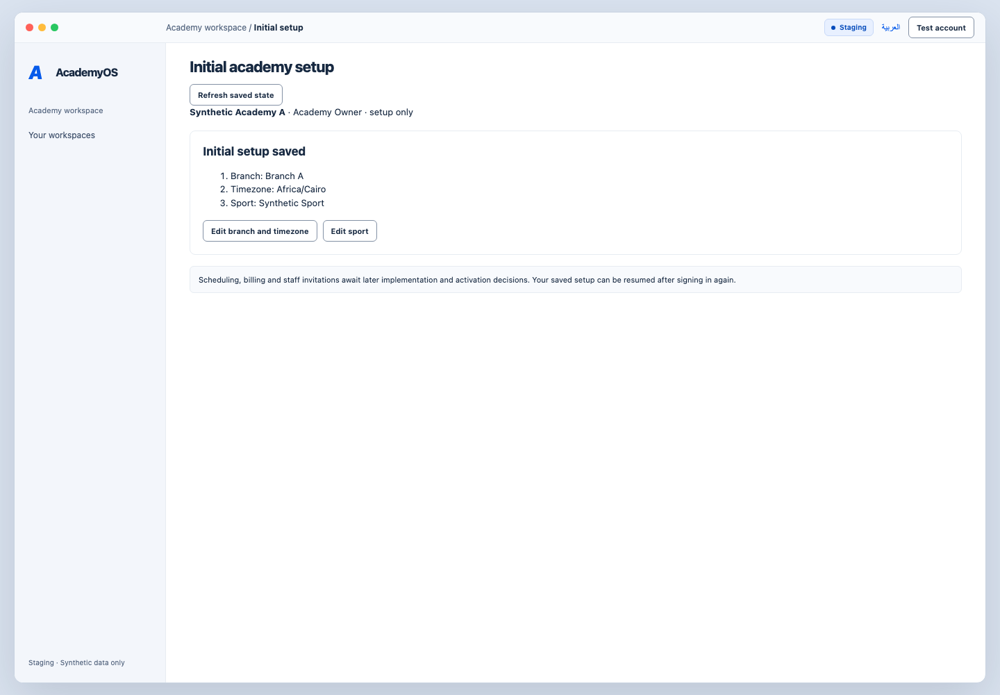
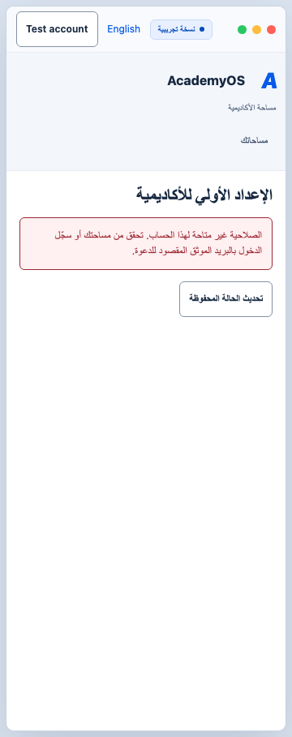

1. Platform Owner — academy admission
The real admission form, before creating the synthetic academy.

Back to steps3. Invitation pending
Creation has returned in the synthetic transport; the owner has not accepted. Queued delivery is not inbox confirmation.

Back to steps4. Invited Academy Owner — review invitation
The real invitation view after simulated identity and handoff. Actual Clerk sign-up and email verification are not represented by this adapter.

Back to steps5. Choose the academy workspace
The synthetic test identity has both platform and owner capabilities; real accounts only see their authorized contexts.

Back to steps6. Branch and timezone draft
A real native timezone selector, with the chosen IANA value retained even when the search has no matches.

Back to steps7. Interrupted response — reconcile first
The test transport drops the response after committing its synthetic operation. The screen offers a status check before another save.

Back to steps9. Version conflict — preserve the draft
The test returns a conflict. The draft remains available while the saved state can be refreshed.

Back to steps11. Initial setup saved
The real confirmation view after reload. In this harness the saved fixture exists only in the running test process. Operational activation remains pending.

Back to steps13. Access removed — private content cleared
A simulated permission denial clears the previously displayed branch/sport.

Back to steps